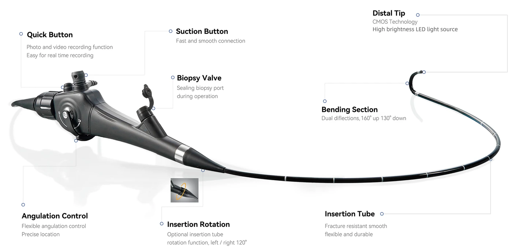
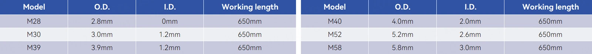

후보 상세 03 / 05 · 2026. 10. 1. 조사 기준
우선 후보 3 · 국내 공급 확인 대상
HugeMed VL3S-M28＋VL3SU(중국)
2.8mm & 3.5" 모니터 간단한 구성. HugeMed 기관지경은 국내 수입총판이 있으나 해당 모델의 판매 여부는 확인 필요
- 명목 외경
- 2.8 mm
- 삽입 길이
- 65 cm
- 직결 화면
- 3.5인치
- 흡인
- 없음
01구매 판단
02사진 자료




사진을 누르면 원본 크기로 열림.
03공개 규격
04ANKOR 33Fr 적용
05화면 구성
- 우선 구성: VL3SU 3.5인치 직결.[15]
06국내 근거·연락처
식약처 알기쉬운의료기기 검색
https://emedi.mfds.go.kr/search/data/MNU20237
- 문의 경로: 더블유에스아이 WSI — HugeMed의 국내 협력·수입 창구.[35]
- 확인된 정상 품목: 수인25-4643 / 수신25-2117 / 수인26-4619.[5]
- HugeMed 기관지경은 국내 수입총판이 있으나 해당 모델의 판매 여부는 확인 필요
- 전화: 02-3447-9660.
- 홈페이지·문의: wsi-healthcare.com / 공식 문의폼.[35]
07참고문헌
번호는 기본 보고서와 동일. 문서 제목을 누르면 원문으로 이동.